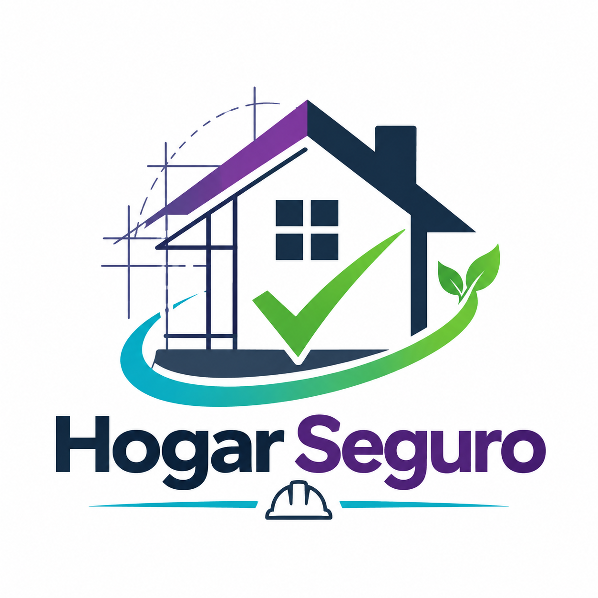
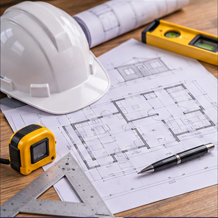

Propuesta de valor
Orientación accesible para mejorar viviendas.

HOGARSEGUROCONSTRUIMOS UN MEJOR MAÑANAINGENIERÍA / COMUNIDAD / PREVENCIÓN
CONSTRUIR CON CRITERIO
Información clara para tomar mejores decisiones sobre tu hogar.
Orientación accesible para mejorar viviendas.
Familias y organizaciones.
Familias con acceso limitado a información.
Orientación, talleres y seguimiento.
Equipo, plataforma y materiales educativos.
Profesionales e instituciones por vincular.
Servicios, talleres y convenios propuestos.
Operación, formación y tecnología.
Parte del excedente para orientación accesible.
